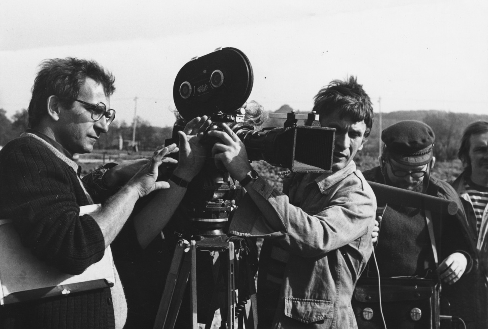

Trois Couleurs: Bleu es un complejo estudio psicológico sobre la libertad (representada por el color azul). La acción se sitúa en París, donde Julie, esposa del célebre compositor Patrice de Courcy, sobrevive a un macabro accidente automovilístico, en el que pierde a su marido y a su pequeña hija, Anna. Durante la convalecencia, intenta suicidarse, sin éxito. Cuando sale del hospital, Julie decide aislarse totalmente del mundo exterior y de los recuerdos de su antigua vida en compañía de su familia: vende su casa, su ropa y todas sus cosas, se distancia de sus amistades, retoma su apellido de soltera (Vignon), se autorrecluye en un diminuto apartamento en la ciudad sin decirlo a nadie y destruye las notas del último encargo a su marido, una pieza clásica inacabada que iba a ser tocada para la celebración de la creación de la Unión Europea.
A pesar de sus deseos autodestructivos, París empuja a Julie a afrontar aspectos del pasado que afloran a la luz, y le impide seguir adelante. Se enamora de Olivier Benoît, el ayudante de su marido (el cual siempre la había amado en secreto), y para empeorar las cosas, descubre que Patrice tenía una amante, llamada Sandrine, la cual está esperando un hijo suyo.